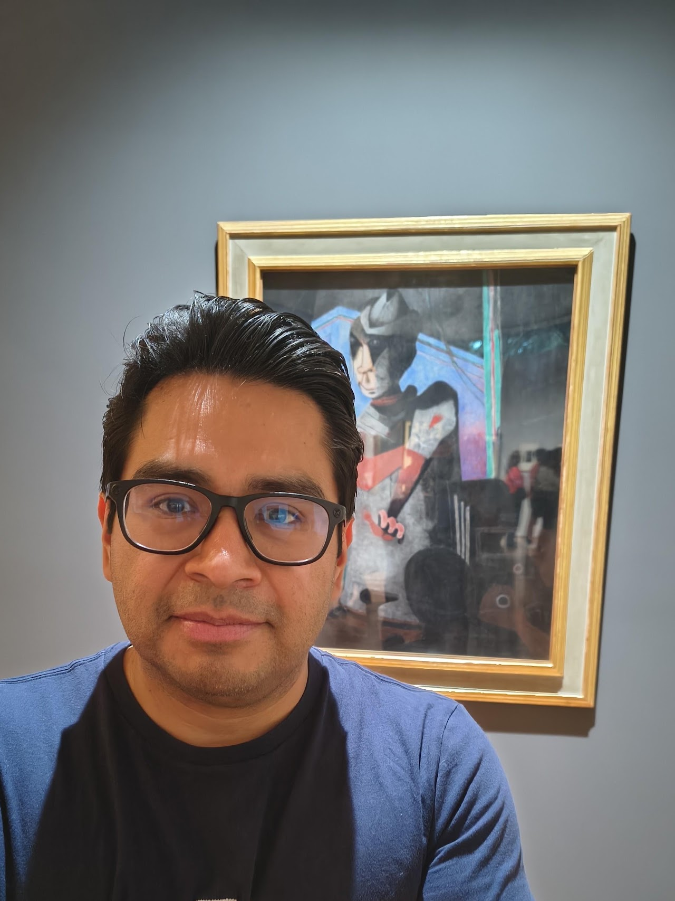
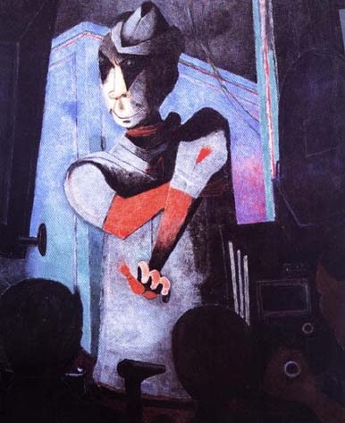
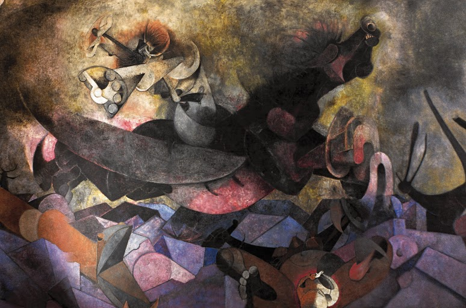
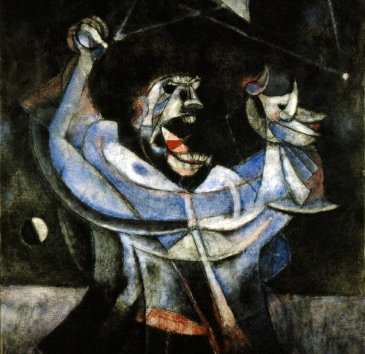

About

I work in functional analysis, operator algebras and abstract harmonic analysis, mainly on the structure and classification of C*-algebras.
I am a Research Associate Professor at the Institute of Mathematics, Unidad Cuernavaca, UNAM. I obtained my PhD in Mathematics at the University of Glasgow in 2016. Much of my recent work concerns nuclear dimension, uniform property Gamma and the Toms–Winter conjecture, and more recently tracially complete C*-algebras.
Elsewhere
Research
Publications and preprints
- A homotopy rigidity theorem for Z0-stable C*-algebras
- Tracially complete C*-algebras
- On topologically zero-dimensional morphisms
- On tracial Z-stability of simple non-unital C*-algebras
- Stabilising uniform property Gamma
- Nuclear dimension of simple C*-algebras
- Uniform property Gamma
- Classifying maps into uniform tracial sequence algebras
- Nuclear dimension of simple stably projectionless C*-algebras
- C*-algebras and their nuclear dimension
- Decomposable approximations and approximately finite C*-algebras
In preparation
- Coloured equivalence of C*-algebras — with J. Gabe, A. Tikuisis and S. White. Preprint available on request.
- Coloured classification of simple Z-stable C*-algebras
Theses
- Decomposable approximations and coloured equivalence of C*-algebras — PhD thesis, University of Glasgow, 2016
- The topological algebra L(X) and subnormed spaces — BSc thesis (in Spanish), UNAM, 2010
Talks
Selected talks, 2014–2022
- The non-unital Toms–Winter conjecture. Barcelona–Kiel Operator Algebra Seminar, May 2022.
- What is a C*-algebra? IMCU Colloquium, UNAM, April 2022.
- VI Latin American Congress of Mathematicians. Uruguay, 2021.
- 8th European Congress of Mathematics. Slovenia, 2021.
- Property Gamma on von Neumann algebras and C*-algebras. Noncommutative Harmonic Analysis, ICMAT–UAM, 2021.
- Property Gamma. Quantum Symmetries Student Seminar, Ohio State University, 2020.
- Stabilising uniform property Gamma. Operator Algebra and Noncommutative Geometry Seminar, University of Wollongong, 2020.
- The Toms–Winter conjecture. Functional Analysis Seminar, Université de Franche-Comté, 2020.
- VI Latin American Congress of Mathematicians. Uruguay, 2020.
- Uniform property Gamma. Functional Analysis Seminar, University of Oxford, 2020.
- The Toms–Winter conjecture. Functional Analysis Seminar, IMPAN, 2020.
- Spring Program on Operator Algebras. East China Normal University, 2020.
- Noncommutative Choquet–de Leeuw theorem. Working seminar, IMPAN, 2020.
- Regularity properties of nuclear C*-algebras. East Coast Operator Algebras Symposium, Ohio State University, 2019.
- Applications of CPoU and uniform property Gamma. Topology and Measure in Dynamics and Operator Algebras, BIRS, 2019.
- Nuclear dimension of Z-stable C*-algebras. Operator Algebras Seminar, IMJ-PRG, 2019.
- An introduction to the Elliott intertwining. Operator Algebra Working Seminar, KU Leuven, 2019.
- The Toms–Winter conjecture. Ring Theory Seminar, Universitat Autònoma de Barcelona, 2018.
- Classification of strict closures. Operator Algebra Working Seminar, KU Leuven, 2018.
- A noncommutative topological dimension. Methusalem Symposium, KU Leuven, 2018.
- Classification of strict closures. Analysis Seminar, University of Glasgow, 2018.
- A noncommutative topological dimension. Casa Matemática Oaxaca, BIRS, 2018.
- Structure and classification of C*-algebras. Methusalem Colloquia, KU Leuven, 2018.
- The Toms–Winter conjecture. Operator Algebras Seminar, KU Leuven, 2017.
- Partitions of unity and the Toms–Winter conjecture. Applications of the UCT for C*-algebras, University of Copenhagen, 2017.
- An invitation to operator algebras. Mathematical Colloquium of Oaxaca, UNAM, 2017.
- An invitation to operator algebras. Analysis Seminar, Technological University of the Mixteca, 2017.
- Constructing order zero maps. Young Mathematicians in C*-algebras, University of Copenhagen, 2017.
- Coloured isomorphic C*-algebras. Workshop on C*-algebras and Dynamical Systems, CRM, UAB, 2017.
- Coloured isomorphisms of C*-algebras. Operator Algebras Seminar, KU Leuven, 2017.
- Colours and order zero maps. Young Functional Analysts' Workshop, Queen's University Belfast, 2016.
- Colouring C*-algebras. Scottish Operator Algebras Seminar, University of Aberdeen, 2016.
- Coloured equivalence of C*-algebras. Analysis Seminar, University of Newcastle, 2016.
- Nuclear C*-algebras and coloured equivalence. KU Leuven, 2016.
- Coloured equivalence of C*-algebras. Kleines Seminar, University of Münster, 2015.
- Coloured classification of C*-algebras. Young Mathematicians in C*-algebras, University of Copenhagen, 2015.
- Classification of AF-algebras. University of Glasgow, 2015.
- Covering dimension. University of Glasgow, 2014.
- Decomposable approximations and nuclear dimension at most omega. CSTAR, University of Glasgow, 2014.
- The Jones polynomial. University of Glasgow, 2014.
- Decomposable approximations and approximately finite C*-algebras. Young Functional Analysts' Workshop, Lancaster University, 2014.
- Non-smooth analysis. University of Glasgow, 2014.
Teaching

Courses
- 2026–2027
- C*-algebras (UAEM)
- 2025–2026
- Quantum graphs (UCIM–UNAM)
- Functional analysis (UAEM)
- Dixmier–Douady classification (UCIM–UNAM)
- Selected topics in analysis (UAEM)
- 2024–2025
- C*-algebras (UCIM–UNAM)
- Crossed products II (UCIM–UNAM)
- 2023–2024
- Crossed products (UCIM–UNAM)
- Introduction to von Neumann algebras (UNAM)
- Real analysis (UCIM–UNAM)
- 2022–2023
- Introduction to operator algebras (UNAM)
- C*-algebras (UCIM–UNAM)
- Differential geometry (UAEM)
- 2018–2019
- Selected topics in mathematics — lecture notes
- 2017–2018
- Structure and classification of C*-algebras (Methusalem mini-course)
Earlier courses, 2009–2017
- 2016–2017
- Complex analysis (KULAK)
- 2014–2016
- Maths 1R, Maths 1S (University of Glasgow)
- Maths 2C — Applied mathematics
- Maths 2D — Advanced topics in linear algebra and calculus
- Maths 2F — Foundations of pure mathematics
- 2013–2014
- Maths 2A — Multivariable calculus (University of Glasgow)
- Maths 2B — Linear algebra
- Maths 2D — Advanced topics in linear algebra and calculus
- Maths 2E — Introduction to real analysis
- 2011–2012
- Advanced analysis II (UNAM)
- Real analysis
- Complex analysis
- 2010–2011
- Advanced analysis I (UNAM)
- Multivariable calculus I and II
- Functional analysis
- 2009–2010
- Calculus I and II (UNAM)
Supervision

- 2026
- Kohei Miyazaki (PhD)
- Erick Escalante (BSc)
- 2024–2026
- Ramsés Alejandro García Abascal Ruíz (MSc)
- 2023–2024
- Ramsés Alejandro García Abascal Ruíz (BSc)
- 2018–2019
- Bram Vancreynest (MSc)
- 2017–2018
- Lies Vanhaecht and Pieter Jan Houben (BSc)
- Hannah Andries and Aaron Van Poecke (BSc)
Events

Conferences, workshops and schools I have organised or taken part in.
- Strong convergence, random matrices and discrete subgroups of Lie groups — IM-UNAM
- Operator algebras: approximation, rigidity and dynamics — Institut Henri Poincaré
- Second Research School in Geometry at Cuernavaca — UCIM-UNAM
- Seminario Interinstitucional de Matrices Aleatorias 2025 — CIMAT, Mexico
- A Joint Meeting The Americas–Europe: Functional Analysis and Differential Equations — UNAM, August 2025
- Free Probability, Random Matrices and Finite-Dimensional Approximations — Casa Matemática Oaxaca, June 2025
- NSF/CBMS Regional Conference: Classifying amenable operator algebras — Texas Christian University, June 2025
- Escuela de Invierno en Matemáticas — UCIM-UNAM, November 2024
- Noncommutativity in the North — MikaelFest — Chalmers and University of Gothenburg, June 2024
Earlier events, 2017–2023
- Twinned Conference on C*-algebras and Tensor Categories — Fields Institute, November 2023
- 56 Congreso Nacional de la Sociedad Matemática Mexicana — UASLP, October 2023
- Rowlee Workshop — University of Nebraska
- VI Latin American Congress of Mathematicians — Uruguay, September 2021
- Cuntz semigroups — University of Münster, July 2021
- 8th European Congress of Mathematics — Slovenia, June 2021
- Measured and Geometric Group Theory, Rigidity, Operator Algebras — CIRM, October 2020
- The 48th Canadian Operator Symposium — Fields Institute, May 2020
- VI Latin American Congress of Mathematicians — Uruguay, July 2020
- Spring Program on Operator Algebras — East China Normal University, 2020
- Cartan C*-Subalgebras and Noncommutative Dynamics — IMPAN, November 2019
- East Coast Operator Algebras Symposium — Ohio State University, October 2019
- Topology and Measure in Dynamics and Operator Algebras — BIRS, September 2019
- Young Mathematicians in C*-algebras — Copenhagen, August 2019
- Operator algebra conference in memory of Étienne Blanchard — Université Paris Diderot, April 2019
- Barcelona Weekend in Operator Algebras — CRM, November 2018
- Young Women in C*-algebras and Young Mathematicians in C*-algebras — KU Leuven, August 2018
- Mexican Mathematicians in the World — CMO-BIRS, June 2018
- NCGOA 2018: C*-algebras and Dynamics — Münster, May 2018
- Applications of the UCT for C*-algebras — University of Copenhagen, October 2017
- Young Mathematicians in C*-algebras — University of Copenhagen, August 2017
- Von Neumann algebras and measured group theory — Institut Henri Poincaré, July 2017
- Operator Algebras: Dynamics and Interactions — CRM, Barcelona, March 2017
- Young Functional Analysts' Workshop — Glasgow, March 2017